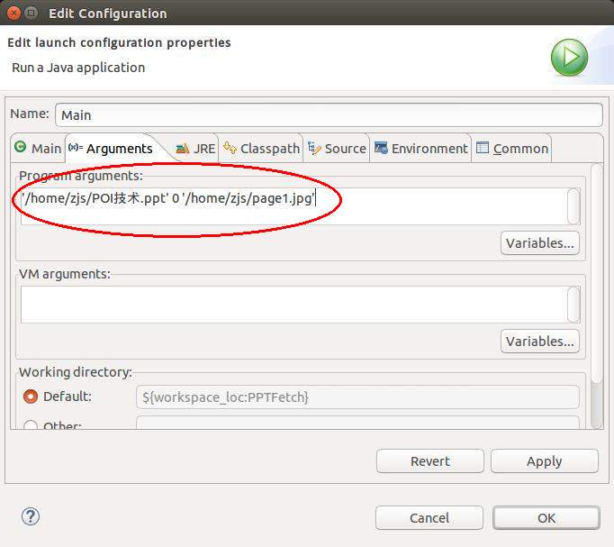

用Java获取PPT文件中某一张幻灯片的截图（快照）这个需求还是挺常见的。比如用百度文库在线看PPT文件，就是百度的后台服务器把PPT转换成了一张张的图片传输到前台的。
实现是利用了Apache的POI项目，这个库可以让Java和Mircosoft的doc、xls、ppt等多张文档格式交互。本文只使用了和ppt有关的库。
一、首先要下载poi-bin-3.12-20150511.tar.gz，然后解压：
cd ~ wget http://apache.fayea.com/poi/release/bin/poi-bin-3.12-20150511.tar.gz tar xzvf poi-bin-3.12-20150511.tar.gz
只需要使用到其中的poi-3.12-20150511.jar与poi-scratchpad-3.12-20150511.jar两个jar包，如图：

二、新建Java工程（我命名为PPTFetch），把这两个jar包加入到Build Path中：
选中PPTFetch，点击菜单栏中的Project ==> Properties ==> Java Build Path，在Libraries中加入poi-3.12-20150511.jar与poi-scratchpad-3.12-20150511.jar两个jar包，如图：

三、新建类zjs.util.PPTFetch，输入如下代码：
package zjs.util;
import java.awt.Dimension;
import java.awt.Graphics2D;
import java.awt.image.BufferedImage;
import java.io.FileOutputStream;
import java.io.IOException;
import javax.imageio.ImageIO;
import org.apache.poi.hslf.HSLFSlideShow;
import org.apache.poi.hslf.model.Slide;
import org.apache.poi.hslf.model.TextRun;
import org.apache.poi.hslf.usermodel.RichTextRun;
import org.apache.poi.hslf.usermodel.SlideShow;
public class PPTFetch
{
private SlideShow m_ppt;
public PPTFetch(String p_path) throws IOException
{
HSLFSlideShow t_file=new HSLFSlideShow(p_path);
m_ppt=new SlideShow(t_file);
}
public void toImage(int p_index,String p_path) throws IOException
{
Slide[] t_slides=m_ppt.getSlides();;
if(t_slides==null||p_index>=t_slides.length)
{
throw new IllegalArgumentException(String.format("No page at index %d!",p_index));
}
Slide t_slide=t_slides[p_index];
for(TextRun t_text:t_slide.getTextRuns())
{
for(RichTextRun t_richtext:t_text.getRichTextRuns())
{
t_richtext.setFontName("宋体");
}
}
Dimension t_size=m_ppt.getPageSize();
BufferedImage t_image=new BufferedImage(t_size.width,t_size.height,BufferedImage.TYPE_INT_RGB);
Graphics2D t_graphics=t_image.createGraphics();
t_slide.draw(t_graphics);
int t_dot=p_path.lastIndexOf(".");
String t_format=p_path.substring(t_dot+1);
FileOutputStream t_out=new FileOutputStream(p_path);
ImageIO.write(t_image,t_format,t_out);
t_out.close();
}
}
四、新建类Main，输入如下代码：
import java.io.IOException;
import zjs.util.PPTFetch;
public class Main
{
public static void main(String[] p_args)
{
if(p_args.length!=3)
{
System.out.println("USAGE: <ppt_path> <page_index(from 0)> <img_path>");
System.exit(1);
}
String t_ppt_path=p_args[0];
int t_page_index=0;
try
{
t_page_index=Integer.parseInt(p_args[1]);
}
catch(NumberFormatException t_exp)
{
System.out.println("ERROR: <page_index> must be a non-negative integer!");
System.exit(1);
}
String t_img_path=p_args[2];
try
{
PPTFetch t_ppt=new PPTFetch(t_ppt_path);
t_ppt.toImage(t_page_index,t_img_path);
}
catch(IOException t_exp)
{
System.out.println("ERROR: "+t_exp.getMessage());
System.exit(1);
}
}
}
至此，PPTFetch这个Java程序就完成了。
如果导出为jar包使用，那么使用时，命令类似于：
java -jar PPTFetch.jar '/home/zjs/POI技术.ppt' 0 '/home/zjs/page1.jpg'
如果想直接在Eclipse中运行，可以设置运行的参数（Project ==> Properties ==> Run/Debug Settings），如图：

选中Main，点击Edit，在Arguments标签中的Program arguments中输入
'/home/zjs/POI技术.ppt' 0 '/home/zjs/page1.jpg'

来看一下运行结果：

PPTFetch果然把“POI技术.ppt”的第1张幻灯片截图出来了，并保存为page1.jpg。注意，在参数中，幻灯片是从0开始计数的！另外就是，保存的格式由保存图片的后缀名决定，可以是jpg或png或其他各种图片格式，只要你安装的JRE支持。